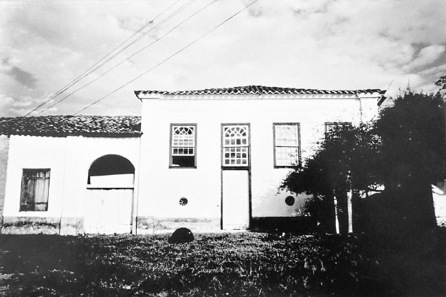
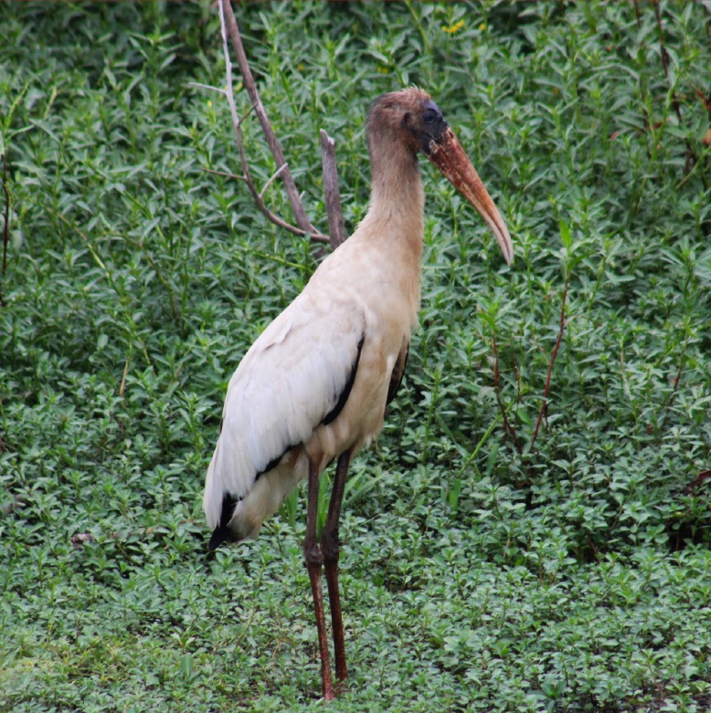
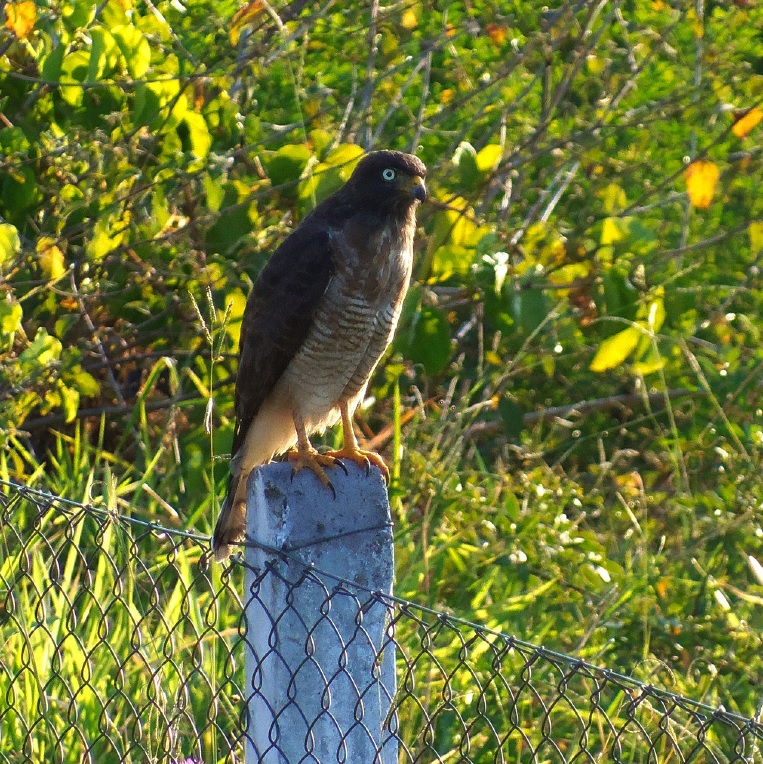
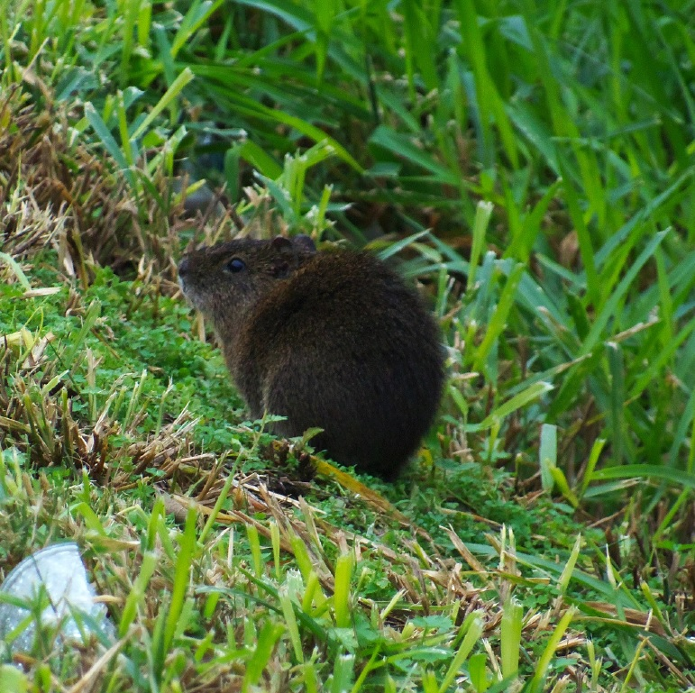
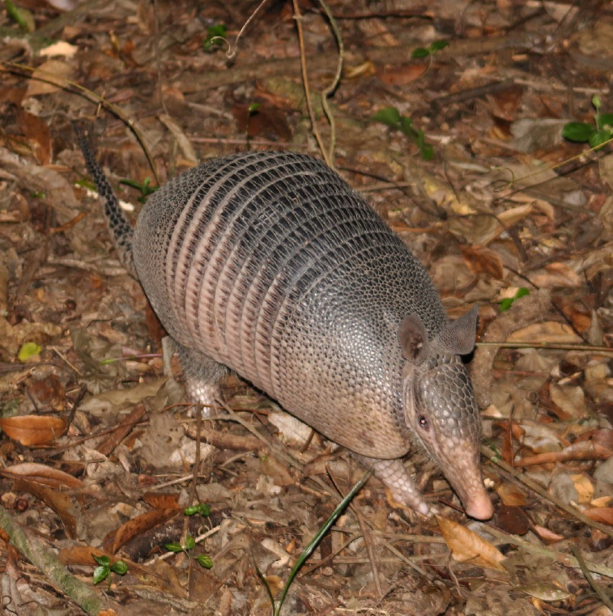
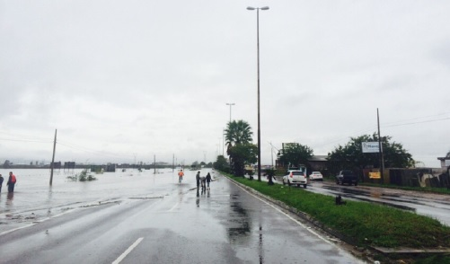
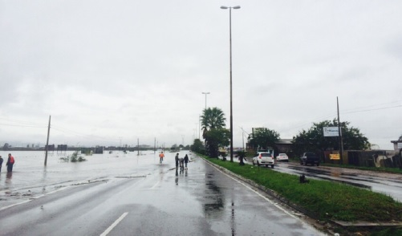

Qual a sua importancia?
clique para mais informações
Histórica
Biológica
Geográfica
Histórica
A casa dos Baptistas foi construída em torno de 1815 por João Baptista Soares, nativo da ilha de São Jorge nos Açores. A casa possui uma arquitetura colonial com senzala fixada na casa grande.
No dia 23 de março do ano de 2022, após anos de pressão por parte da população e justiça, a Casa dos Baptistas foi tombada. A partir disso considera-se patrimônio histórico de Cachoerinha uma das casas mais antigas do Rio Grande do Sul
Biológica
O mato do Júlio é rico em biodiversidade, dentro dessa área encontramos: nascentes, arroio, açudes, banhados, além de possuir abundância em fauna e flora
A área é ideal para espécies que estão ameaçadas de extinção. O bugio-ruivo já foi avistado por moradores do entorno do Mato do Júlio anos atrás, mas devido a urbanização e caça hoje não habitam mais a área.
Besourinho
Gaviçao-carijó

Pica-Pau do-Campo
Preá
 Tatu-mulita
Lagarto Teiú

Besourinho
Gaviçao-carijó
Pica-Pau do-Campo
Preá
Tatu-mulita
Lagarto Teiú
Serviços ecossistêmicos
Principais serviços ecossistêmicos que o Mato do Julio nos proporciona
- Regulação do clima
- Qualidade do ar
- Polinização
- Regulação do fluxo de água, controle de secas e inundações
- Controle de pragas e controle de doenças
- Controle da erosão e manutenção da fertilidade do solo
- Controle de desastres naturais
 
